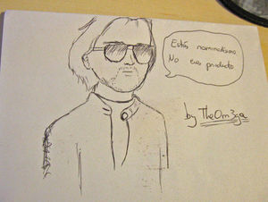

Iglesia de la Ristología
 De: La Frikipedia, la enciclopedia extremadamente seria.
De: La Frikipedia, la enciclopedia extremadamente seria.
 Imagen del todopoderoso Risto Mejide
La Ristología es un sistema de creencias y enseñanzas que se derivan de las salomónicas sentencias del inefable Risto Mejide. Este impagable creativo publicitario, artífice de campañas tan famosas como La vida es móvil de Vodafone o Sé la carretera para BMW (basándose en las enseñanzas de otro maestro, Bruce Lee), además de un talento prodigioso, tiene la capacidad sobrehumana de acertar siempre en sus aseveraciones.
A medio camino entre la religión y el márketing, las enseñanzas de Risto son recogidas por la Iglesia de la Ristología creada en el solsticio de invierno de 2006, año cero de la era Risto según sus discípulos. A decir de éstos, las palabras de Risto están imbuidas de una sabiduría comparable y acaso mayor a las de Jesús, Buda o Mahoma.
El líder
La última aparición mediática de Risto Mejide tuvo lugar en otoño de 2006, en el marco del programa-concurso de televisión Operación Triunfo. En él, Risto desempeña el papel de jurado corrosivo y severo pero justo que dice lo que todos piensan y nadie más se atreve a manifestar. Los concursantes reciben con humildad las palabras que Risto les dirige y en la intimidad meditan sobre ello para ser mejores. El público, desde casa, asiste extasiado a las exposiciones y cada vez más personas meditan también en su intimidad los significados profundos de las parábolas de Risto.
Su lenguaje ácido y mordaz pero cargado de significados, es analizado y transformado en conocimiento en estado puro por sus discípulos, como en el Renacimiento los alquimistas transmutaban el plomo en oro. Como otros grandes Maestros de la Humanidad, Risto gusta de usar parábolas para transmitir conceptos crípticos como “ser un producto”, “saber venderse”, “ser un consolador” así como la prohibición expresa de ser un hortera, que son meditados con seriedad por todos aquellos que se definen como ristólogos.
Mandamientos de Risto
- Seguirás a Risto sobre todas las cosas.
- No tomarás el Producto en vano.
- Santificarás las galas de OT.
- Honrarás las gafas de Risto.
- Flagelarás a los profesores de la Academia.
- No te vestirás como una puta ni como un payaso.
- No serás un hortera como Ismael.
- No levantarás las nominaciones.
- No desafinarás como una hiena ni imitarás a Gollum en el escenario.
- No codiciarás los Productos ajenos. Tú eres Producto.
¿Cómo ser un buen Ristólogo?
- Los miembros de la Iglesia de la Ristología tratan de parecerse a su Maestro en todos los aspectos de la vida: la mayor parte usa a diario las gafas de sol graduadas que Él lleva a todas horas y algunos comienzan a dejarse el pelo largo, a imitación de Risto.
- Es importante seguir una actitud ristológica en el vestir y el comportarse: hablar con alegorías y parábolas rísticas o poner los pies sobre la mesa demuestra ser una actitud de un buen ristiano.
- Muy apreciada en la Iglesia de la Ristología es la verdad por muy lacerante e hiriente que pueda llegar a ser: una opinión o comentario cruel es plenamente ristológico siempre y cuando sea sincero.
- Lo fundamental es saber venderse bien, convertirse en Producto, como sinónimo de éxito profesional o social.
- Parábola del consolador: Eres muy eficiente en la ejecución pero muy fría en el sentimiento (Palabra de Risto).
- Parábola de la (vagina): La audiencia no vota con el oído si no con la vagina.
- Si realmente crees que eres artista empieza a pensar en ti.
Profetas de la Ristología
Esta es la lista de los profetas de la Ristología:
- Adán y EvaRISTO: Fueron los primeros padres de la humanidad, pero ¿nunca os habéis preguntado por qué se dice que eran los primeros padres? Efectivamente Adán y Evaristo en realidad eran una pareja gay que vivía en el paraiso.
- ARISTÓteles: Tras el filósofo se escondía el maestro Risto en una encarnación anterior.
- ARISTÓfanes: Un poeta renombrado de la época. De ahí la dialéctica de Risto y su verso perfecto a la hora de nominar.
- ARISTOgatos: Una serie emblemática de dibujos animados cuyo objetivo era difundir el mensaje de la Ristología.
- Ángel CRISTO: No tenemos mucha idea de porqué está en la lista. ¿Alguien nos lo puede aclarar?
- Hristo Stoichkov: Un jugador con mucho carácter, capaz de criticar a cualquier árbitro que se le pusiera por delante
Enlaces externos
Autor(es):
- Nexo
- TheOm3ga
- Dark temptation
- 62666
- Shadowmura
- Luzelenav
Frikipedia 2005-2016, Licencia
GFDL 1.2 - Extraído por FrikiLeaks